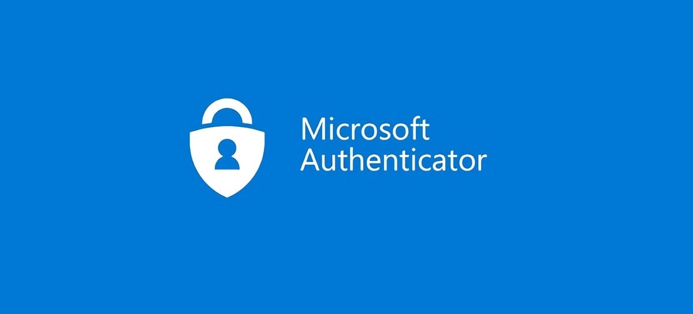
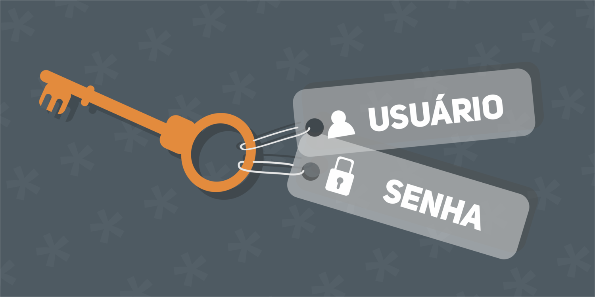

Núcleo de Infraestrutura e Suporte de TIC
Principais tópicos / Dúvidas frequentes
-
VPN Conector 2.0 (Acesso Remoto)

Para realizar algumas demandas especificas alguns funcionarios precisam de ter o acesso remoto a sua maquina...
-
Jax

Todos os servidores foram alocados em teletrabalho e com isso vem a utilização do Jax para realizar as ligações....
-
Redefinir senha do authenticator
Para redefinir o acesso ao Portal Ca, o usuário deve seguir os seguintes passos: Solicitar o reset do seu usuário de rede do Microsoft Autenticator..
-
Troca de senha de rede / E-mail
Procedimento para solicitar troca de senha de rede ou e-mail Abrir chamado no 0800 595 2001 (Positivo)...

Central de Comunicados - Assessoria de Tecnologia da Informação (Nucleo de Infraestrutura e Suporte de TIC) ©.